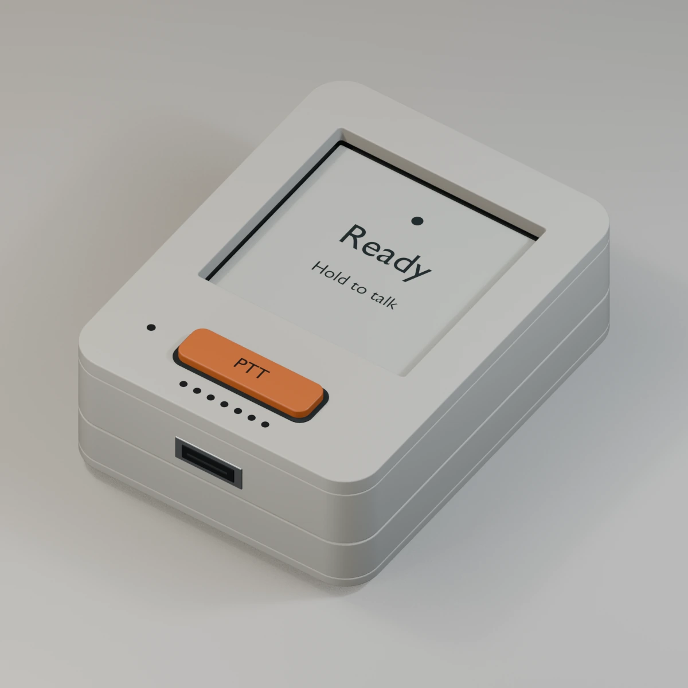
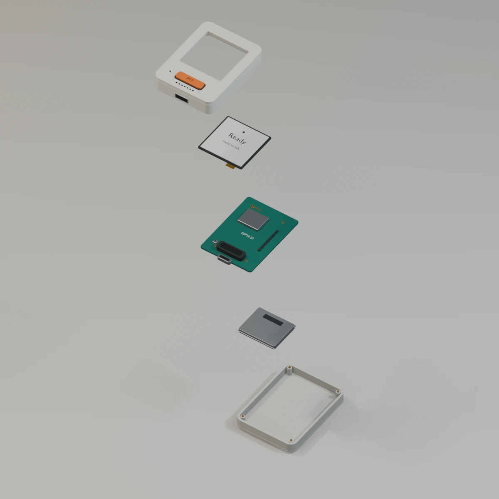
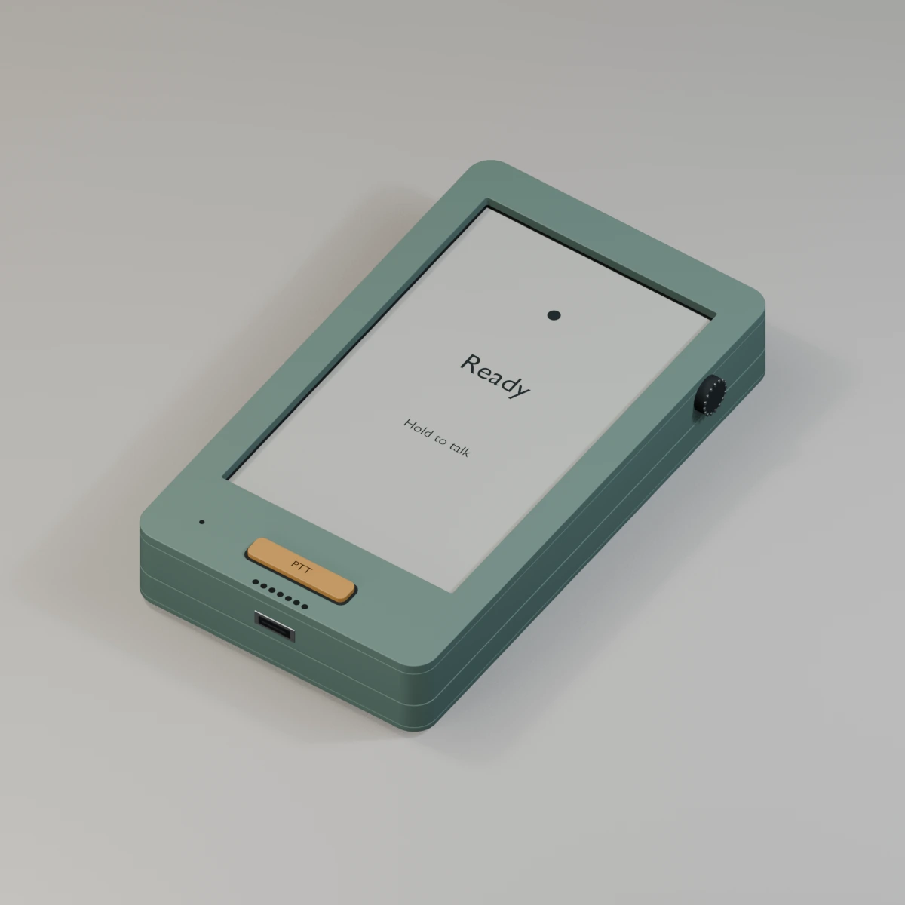
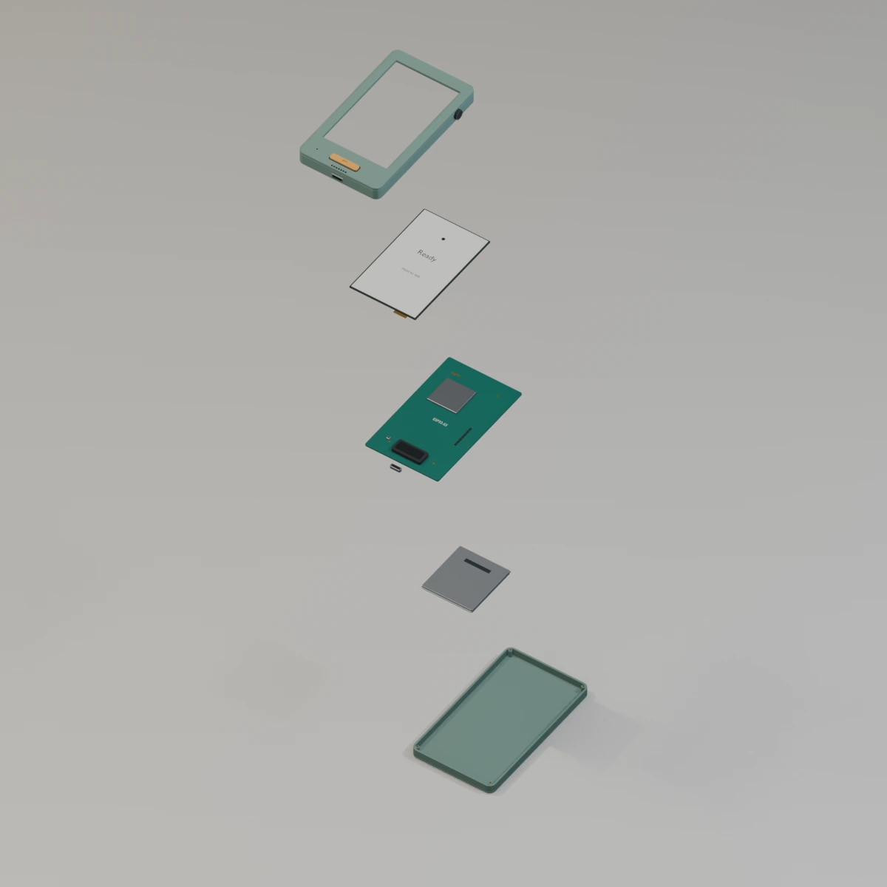
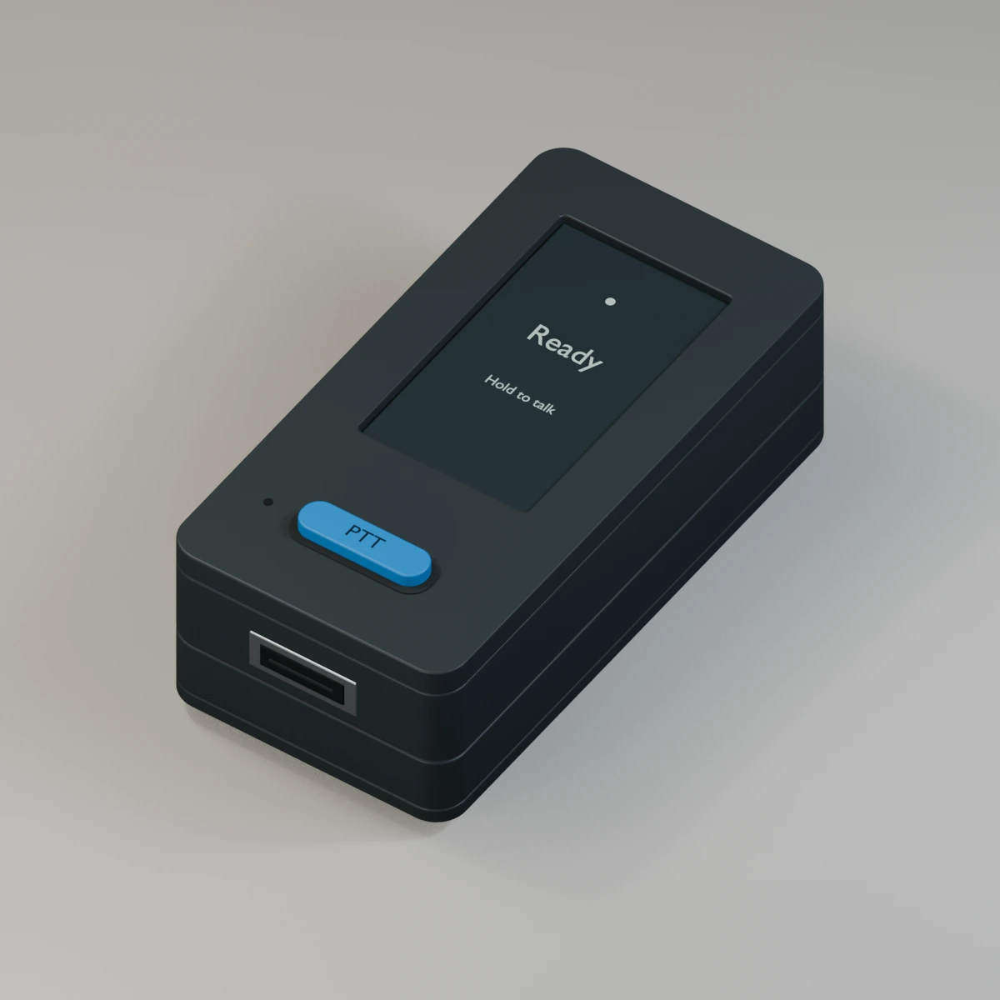
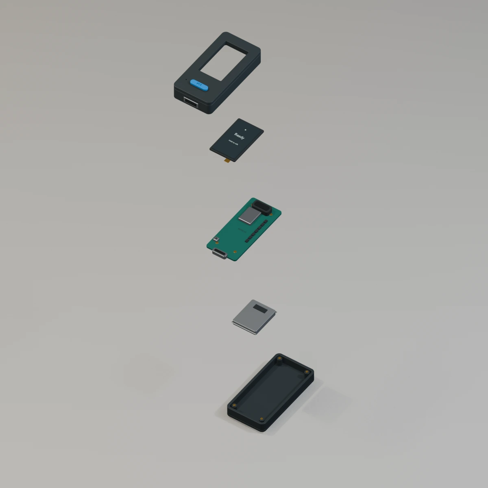

Pocket e-paper
Waveshare 1.54 · SKU32298


39.8 × 53 × 16.9 mm family case reference. Older-revision drawing; V2 fit unverified.
Choose a device on the left. See what’s included—and what else you need—on the right.
Three Wi-Fi voice concepts: microphone, physical push-to-talk, speaker and battery. LTE is optional later.
Concepts—not fit-tested CAD. Battery envelopes, PCB layouts, case walls and control placement are approximate. No wiring or power validation is implied.
Waveshare 1.54 · SKU32298


39.8 × 53 × 16.9 mm family case reference. Older-revision drawing; V2 fit unverified.
Waveshare 3.97 · SKU33552


60 × 99.5 mm board; 51.84 × 86.4 mm active display. Proposed 66 × 116 × 18 mm shell—not a verified fit.
M5Stack StickS3 · K150


24 × 48 × 15 mm vendor case reference. LCD, not e-paper. Internal geometry is approximate.
Start with Wi-Fi and a speaker. Headphones and cellular are optional upgrades. None of these is a finished Hermes device: programming and hands-on testing are still needed.
Loading reviewed evidence…
Physical push-to-talk, a microphone, spoken replies and phone-independent everyday use are the goal. Existing Wi-Fi, Internet, a programming computer and an agent backend are assumed infrastructure. Hardware subtotals exclude software work, tools, hosting and recurring service. Included means documented package contents—not bench-tested performance. Never connect headphones to speaker pins or assume an add-on is compatible just because a chip supports audio.
Loading…
No research items match this view.